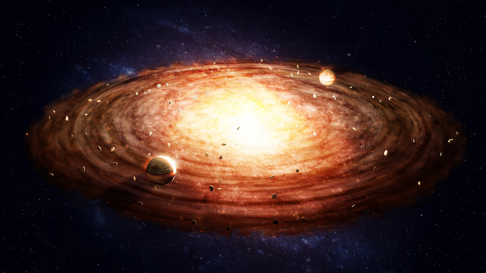
A Naprendszer a Tejútrendszer egyik spirálkarjában, az Orion-karban található. Központi égiteste a Nap, amely körül nyolc bolygó kering. A Naprendszerhez emellett törpebolygók, holdak, kisbolygók, üstökösök és számos kisebb égitest is tartozik. A Naprendszer körülbelül 4,6 milliárd évvel ezelőtt alakult ki egy hatalmas gáz- és porfelhőből. A gravitáció hatására az anyag egyre inkább a középpont felé sűrűsödött, és létrejött a Nap. A bolygók a megmaradt anyagból alakultak ki a Nap körül.
A Naprendszer belső részén négy kőzetbolygó található: a Merkúr, a Vénusz, a Föld és a Mars. Ezek viszonylag kicsik, szilárd felszínnel rendelkeznek, és közel vannak a Naphoz. A külső régióban található a Jupiter és a Szaturnusz, amelyek gázóriások. Az Uránusz és a Neptunusz jégóriásoknak számítanak, mert légkörükben és belsejükben jelentős szerepet játszanak a vízhez, ammóniához és metánhoz hasonló illékony anyagok. A nyolc bolygó sorrendje a Naptól kifelé haladva: Merkúr, Vénusz, Föld, Mars, Jupiter, Szaturnusz, Uránusz és Neptunusz.
A bolygók mellett a holdak is fontos részei a Naprendszernek. A holdak olyan természetes égitestek, amelyek egy bolygó vagy más nagyobb égitest körül keringenek. A Merkúrnak és a Vénusznak nincs természetes holdja. A Földnek egy, a Marsnak pedig két holdja van. A Jupiternek és a Szaturnusznak különösen sok holdja ismert, de az Uránusz és a Neptunusz is számos természetes kísérővel rendelkezik.
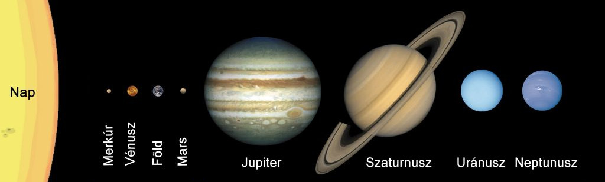
A bolygók sorrendje
A Naprendszer bolygói
A Nap
A Nap a Naprendszer központi csillaga és messze annak legnagyobb égiteste. Átmérője körülbelül 1,4 millió kilométer, vagyis nagyjából száz Föld férne el egymás mellett a Nap átmérőjén. Anyagának nagy részét hidrogén és hélium alkotja. A Nap belsejében magfúzió zajlik, amelynek során hidrogénből hélium keletkezik, miközben hatalmas mennyiségű energia szabadul fel. Ez az energia végül fény és hő formájában jut el a világűrbe. A Földön élő élőlények számára a Nap energiája alapvető fontosságú.
A Nap felszínének látható rétegét fotoszférának nevezzük. Hőmérséklete körülbelül 5500 Celsius-fok. A Nap légköréhez tartozik a kromoszféra és a hatalmas kiterjedésű korona is. A Nap felszínén napfoltok, napkitörések és más változások figyelhetők meg. A napkitörések során nagy mennyiségű energia és töltött részecske szabadulhat fel. Ezek a részecskék a Föld környezetében is hatást gyakorolhatnak, például sarki fényt okozhatnak.
A Nap gravitációja tartja pályán a bolygókat és a Naprendszer számos más égitestét. A Naprendszer tömegének körülbelül 99,8 százaléka a Napban található. A Nap saját tengelye körül is forog, de mivel nem szilárd test, különböző részei eltérő sebességgel mozognak. Az egyenlítőjénél körülbelül 25 nap alatt fordul meg egyszer, míg a pólusok közelében ez az idő hosszabb. A Nap körülbelül 4,6 milliárd éve létezik, és még nagyjából ötmilliárd évig folytatja jelenlegi fejlődési szakaszát. Ezután vörös óriássá alakul, végül pedig fehér törpe marad vissza belőle.
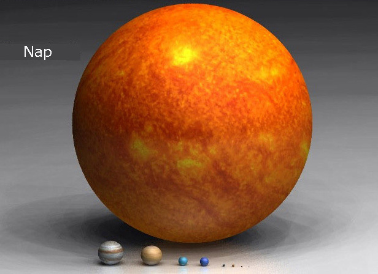
A nap méretarányos megjelenítése
Merkúr
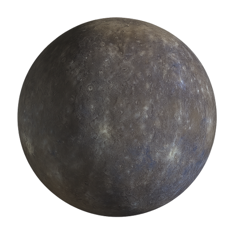
A Merkúr a Naphoz legközelebb található bolygó. Egyben a Naprendszer legkisebb bolygója is. Felszíne sziklás, és rengeteg becsapódási kráter borítja. A Merkúrnak nagyon vékony légköre van, amelyet inkább exoszférának nevezünk. A Naphoz való közelsége miatt felszínét erős napsugárzás éri. A Merkúr felszíni körülményei ezért rendkívül szélsőségesek.
A Merkúr viszonylag lassan fordul meg a tengelye körül, miközben gyorsan megkerüli a Napot. Egy Merkúr-év mindössze 88 földi napig tart. A bolygó felszínén nappal rendkívül magas, éjszaka pedig nagyon alacsony hőmérséklet alakulhat ki. Ennek egyik oka, hogy a bolygó ritka exoszférája nem képes hatékonyan megtartani a hőt. A felszínen hatalmas kráterek és hosszú sziklafalak is találhatók. A Merkúr belsejében a bolygó méretéhez képest nagyon nagy vasban gazdag mag található.
A Merkúrnak nincs természetes holdja. Ez a Vénusszal együtt különlegessé teszi a belső bolygók között. A bolygó holdtalansága részben azzal függhet össze, hogy közel kering a Naphoz, amelynek erős gravitációs hatása megnehezíti egy stabil holdpálya fennmaradását. A Merkúr tanulmányozása fontos a bolygók kialakulásának megértéséhez. Több űrszonda is vizsgálta, köztük a NASA MESSENGER küldetése. A Merkúr további kutatása segíthet megérteni a kőzetbolygók belső szerkezetét és fejlődését.
Vénusz
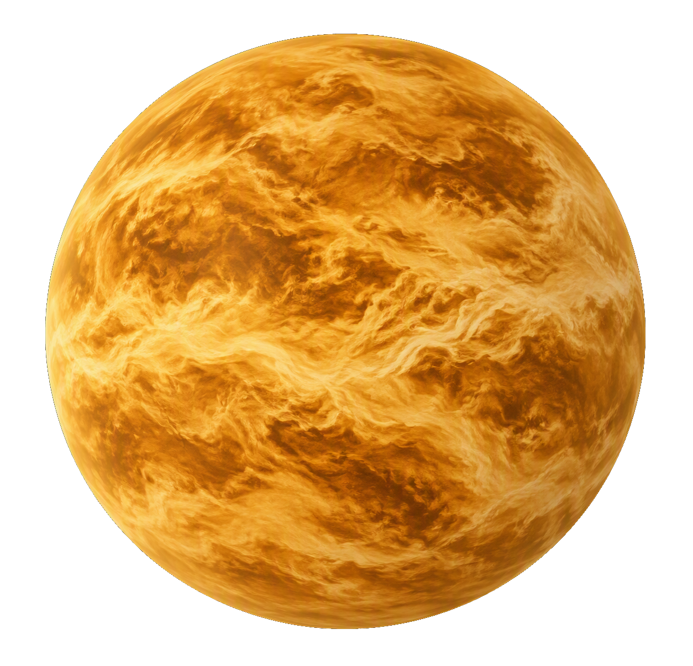
A Vénusz a Naptól számított második bolygó. Mérete és összetétele miatt sok tekintetben hasonlít a Földhöz, ezért gyakran a Föld testvérbolygójának nevezik. Felszínét azonban rendkívül sűrű légkör borítja. A légkör főként szén-dioxidból áll, és vastag felhőrétegek találhatók benne. A felszínen hatalmas nyomás uralkodik. A Vénusz a Naprendszer legforróbb bolygója, annak ellenére, hogy nem ez van a legközelebb a Naphoz.
A Vénusz magas hőmérsékletét elsősorban az erős üvegházhatás okozza. A sűrű szén-dioxid-légkör csapdába ejti a hőt, ezért a felszíni hőmérséklet körülbelül 465 Celsius-fok lehet. A bolygón vulkáni területek, hegyek és hatalmas síkságok találhatók. A Vénusz forgása különleges, mert a legtöbb bolygóhoz képest ellentétes irányban forog. Egy Vénusz-nap hosszabb, mint egy Vénusz-év. A bolygó felszínét a vastag felhőzet miatt közvetlenül nehéz megfigyelni.
A Vénusznak nincs természetes holdja. A bolygó környezetében azonban egy különleges pályán mozgó, Zoozve nevű kvázi-hold is ismert. Ez nem valódi hold a hagyományos értelemben, mert nem a Vénusz körül kering úgy, mint például a Hold a Föld körül. A Vénusz kutatása azért fontos, mert megmutathatja, hogyan fejlődhet két hasonló méretű kőzetbolygó nagyon különböző irányba. A bolygó példája arra is figyelmeztet, hogy a légkör összetétele alapvetően meghatározhatja egy bolygó felszíni környezetét. A Vénusz ezért a bolygók légkörének és éghajlatának kutatásában kiemelkedő jelentőségű.
Föld
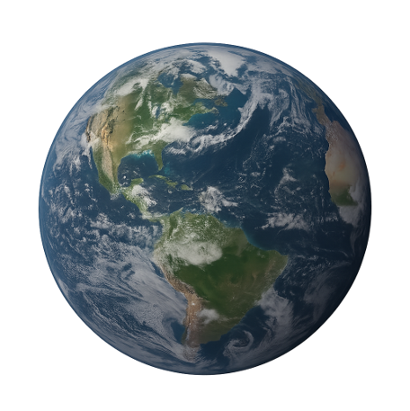
A Föld a Naptól számított harmadik bolygó, és jelenlegi tudásunk szerint az egyetlen olyan égitest, amelyen bizonyítottan létezik élet. Felszínének jelentős részét folyékony víz borítja. A Föld szilárd kőzetbolygó, amelynek légköre főként nitrogénből és oxigénből áll. A bolygó felszínén óceánok, kontinensek, hegyek, síkságok és sivatagok találhatók. A légkör és a mágneses tér védelmet nyújt a világűr számos káros hatásával szemben. A Föld megfelelő hőmérsékleti viszonyai lehetővé teszik a folyékony víz tartós jelenlétét.
A Föld belseje több rétegből áll. Ezek közé tartozik a kéreg, a köpeny, a külső mag és a belső mag. A Föld felszínét folyamatosan alakítja a lemeztektonika, a vulkanizmus, az erózió és az időjárás. A légkörben található vízgőz, szén-dioxid és más gázok természetes üvegházhatást hoznak létre. Ez a természetes üvegházhatás nélkülözhetetlen ahhoz, hogy a Föld átlagos hőmérséklete alkalmas legyen az élet számára. A bolygó körülbelül 4,5 milliárd éves. A Föld a Nap körüli pályáját körülbelül 365,25 nap alatt teszi meg.
Hold
A Hold a Föld egyetlen természetes holdja. Átmérője körülbelül a Föld átmérőjének egynegyede. Felszínét kráterek, hegyek és hatalmas, sötét bazaltsíkságok borítják. A Holdnak nincs olyan sűrű légköre, mint a Földnek. Felszínén ezért jelentős hőmérséklet-különbségek alakulnak ki a nappal és az éjszaka között. A Hold felszínét az emberes Apollo-küldetések során közvetlenül is tanulmányozták.
A Hold valószínűleg egy hatalmas ősi ütközés során alakult ki. Egy Mars méretű égitest ütközhetett a fiatal Földdel, és a kilökődött anyagból formálódhatott a Hold. A Hold gravitációja jelentős hatással van a Föld óceánjainak árapályára. A Hold ugyan mindig ugyanazt az oldalát fordítja a Föld felé, mert tengely körüli forgási ideje megegyezik keringési idejével. A Földről ezért főként a Hold egyik oldalát látjuk. A Hold fázisai a Nap, a Föld és a Hold egymáshoz viszonyított helyzetének változásából alakulnak ki.
A Hold az emberiség történetében is különleges szerepet játszik. Az Apollo-program keretében 1969 és 1972 között tizenkét amerikai űrhajós járt a felszínén. Az űrhajósok holdkőzeteket és talajmintákat hoztak vissza a Földre. Ezek a minták fontos információkat szolgáltattak a Hold keletkezéséről és fejlődéséről. Napjainkban újabb holdkutatási programok célja a Hold részletesebb feltérképezése és a későbbi emberes küldetések előkészítése. A Hold kutatása egyben a Naprendszer korai történetének megismerését is segíti.
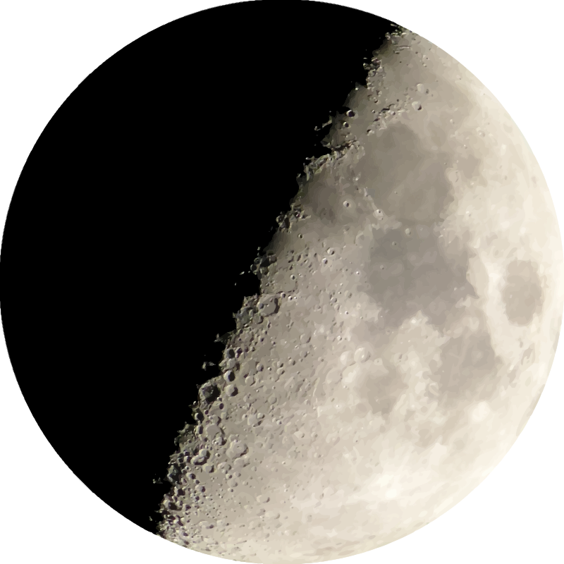
Mars
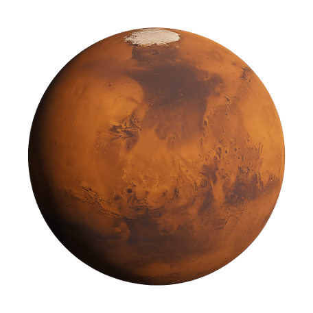
A Mars a Naptól számított negyedik bolygó. Jellegzetes vörös színét a felszínén található vas-oxid, vagyis rozsdaszerű ásványok adják. A Mars kisebb a Földnél, és vékony légkörének legnagyobb része szén-dioxid. Felszínén hatalmas vulkánok, mély kanyonok és ősi folyómedrek találhatók. A Naprendszer legnagyobb ismert vulkánja, az Olympus Mons is a Marson található. A bolygó sarkvidékein vízjégből és szén-dioxid-jégből álló sapkák vannak.
A Mars felszínén ma rendkívül hideg és száraz körülmények uralkodnak. Ugyanakkor számos bizonyíték utal arra, hogy a távoli múltban folyékony víz is jelen lehetett a felszínen. A kutatók ezért különösen érdeklődnek a marsi élet lehetősége iránt. Több marsjáró és leszállóegység vizsgálta a bolygó kőzeteit és talaját. A Mars légköre túl vékony ahhoz, hogy a felszínen hosszú ideig stabilan fennmaradjon a folyékony víz. A bolygó azonban a jég formájában jelentős vízkészleteket őrizhet.
Phobos
A Phobos a Mars nagyobbik és a bolygóhoz közelebb keringő holdja. Alakja szabálytalan, ezért nem hasonlít a Föld gömb alakú Holdjára. Felszínén számos kráter található, amelyek közül a Stickney-kráter a legnagyobb. A Phobos olyan közel kering a Marshoz, hogy egy teljes keringése kevesebb mint egy marsi napig tart. Emiatt a Mars felszínéről nézve különleges módon mozog az égbolton. A hold eredete továbbra is tudományos kutatások tárgya.
A Phobos pályája lassan közeledik a Marshoz. A marsi gravitáció miatt a hold hosszú távon egyre közelebb kerül a bolygóhoz. Több tízmillió év múlva elképzelhető, hogy a Phobos a Marsba zuhan vagy a gravitáció hatására szétesik. Ebben az esetben akár egy vékony gyűrűrendszer is kialakulhatna körülötte. A Phobos kis mérete és szabálytalan alakja miatt valószínűleg nem ugyanúgy alakult ki, mint a Föld Holdja. Kutatása ezért a kis égitestek és a Mars fejlődésének megértéséhez is fontos.
A Phobos felszínének tanulmányozása segíthet meghatározni a hold eredetét. Egyes elméletek szerint egy befogott kisbolygó lehet, más elképzelések szerint azonban marsi eredetű anyagból alakult ki. A hold felszínéről és belsejéről származó minták sok kérdésre választ adhatnának. Emiatt több űrügynökség is vizsgálta már a Phobos mintavisszahozó küldetésének lehetőségét. Egy ilyen küldetés a Mars történetéről is új információkat szolgáltathatna. A Phobos tehát kicsi hold, mégis fontos szerepet játszik a bolygókutatásban.
Deimos
A Deimos a Mars másik természetes holdja. A Phoboshoz hasonlóan szabálytalan alakú és viszonylag kicsi. Felszíne sötét, és több becsapódási kráter is található rajta. A Deimos távolabb kering a Marstól, mint a Phobos. A hold gravitációja gyenge, ezért felszínén egy ember számára nagyon könnyű lenne az ugrás. A Deimosról a Mars felszínéről nézve kisebb fényes pontként lehetne látni.
A Deimos felszínét finom törmelék és regolit borítja. Alakja inkább egy szabálytalan kisbolygóra hasonlít, mint egy nagy gömb alakú holdra. Emiatt a kutatók régóta vizsgálják, hogy a Mars befogott kisbolygója lehetett-e. Egy másik lehetőség, hogy a Mars körüli anyagból alakult ki. A pontos eredet megállapításához részletesebb vizsgálatokra és lehetőleg felszíni mintákra lenne szükség. A Deimos ezért érdekes célpont a jövőbeli Mars-kutatások számára.
A Deimos a Phobosnál lassabban kering a Mars körül. Pályája távolabb található a bolygótól, ezért a Mars égboltján is másképpen mozog. A hold kis mérete miatt gravitációs hatása a Marsra csekély. Ennek ellenére a Mars két holdjának vizsgálata fontos a bolygó múltjának megértéséhez. A kutatók a holdak összetételéből következtethetnek arra, milyen anyagok álltak rendelkezésre a Mars kialakulásakor. A Deimos így a Mars rendszerének egyik érdekes és még sok kérdést rejtő tagja.
Jupiter
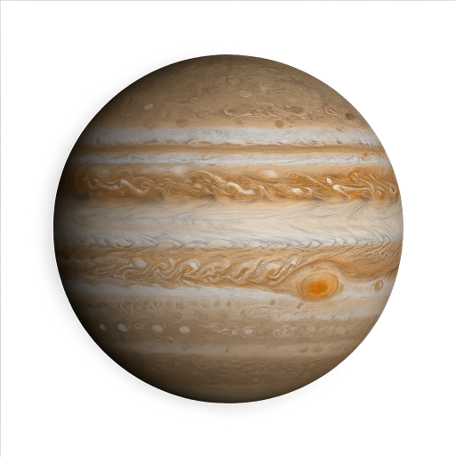
A Jupiter a Naptól számított ötödik bolygó és a Naprendszer legnagyobb bolygója. Gázóriás, ezért nincs olyan szilárd felszíne, amelyen a Földhöz hasonlóan sétálni lehetne. Légköre főként hidrogénből és héliumból áll. Felhősávjai között hatalmas viharok és örvények alakulnak ki. A legismertebb légköri képződménye a Nagy Vörös Folt, amely egy hatalmas vihar. A Jupiter tömege nagyobb, mint a Naprendszer többi bolygójának együttes tömege.
A Jupiter gyorsan forog a tengelye körül. Egy jupiteri nap kevesebb mint tíz földi óráig tart. A gyors forgás hozzájárul a bolygó jellegzetes felhősávjainak kialakulásához. A Jupiternek gyűrűrendszere is van, bár az sokkal kevésbé látványos, mint a Szaturnusz gyűrűi. A bolygó rendkívül erős mágneses teret hoz létre. Ez a mágneses tér a Naprendszer egyik legnagyobb magnetoszféráját hozza létre.
Io
Az Io a Jupiter négy nagy Galilei-holdjának egyike. Felszínén a Naprendszer legaktívabb vulkáni folyamatai zajlanak. A Jupiter és más nagy holdak gravitációs hatása folyamatosan deformálja az Io belsejét. Ez a dagályerők miatt hatalmas mennyiségű hőt termel. A felszínen kénes anyagok és vulkáni lerakódások találhatók. Az Io ezért egészen különleges világ a Naprendszerben.
Az Io felszínén számos vulkán működik. Egyes kitörések során az anyag több száz kilométer magasra is eljuthat a világűrbe. A hold felszíne viszonylag fiatal, mert a vulkáni tevékenység folyamatosan átalakítja. Az Io felszíne ezért kevés ősi becsapódási krátert őriz. A Jupiter erős sugárzási környezete miatt az Io felszíne veszélyes környezetet jelentene egy emberes küldetés számára. Ennek ellenére tudományos szempontból rendkívül értékes célpont.
Az Io tanulmányozása megmutatja, hogyan képes egy hold belsejében a gravitáció hőt termelni. Ez a folyamat más égitesteknél is fontos lehet. Az Io vulkanizmusa bizonyítja, hogy egy hold is lehet geológiailag rendkívül aktív. A kutatók a vulkáni gázokat, a felszíni anyagokat és a Jupiter mágneses terével való kölcsönhatást is vizsgálják. Az Io így nem csupán egy egyszerű kísérő égitest. A Naprendszer egyik legdinamikusabb világának tekinthető.
Europa
Az Europa a Jupiter egyik legfontosabb holdja az élet lehetőségének kutatása szempontjából. Felszínét fényes, jégből álló kéreg borítja. A jég alatt a kutatók egy hatalmas sós óceán jelenlétét feltételezik. Ez az óceán sokkal több vizet tartalmazhat, mint a Föld felszíni óceánjai. Az Europa felszínén hosszú repedések és különleges mintázatok figyelhetők meg. A hold ezért az egyik legérdekesebb célpont a Naprendszerben.
Az Europa belsejében a Jupiter gravitációja miatt hő termelődhet. Ez segíthet abban, hogy a felszín alatti óceán folyékony maradjon. A tudósok azért érdeklődnek különösen az Europa iránt, mert a folyékony víz az élet egyik alapvető feltétele. A víz önmagában azonban nem bizonyítja az élet jelenlétét. Az élethez energiaforrásokra és megfelelő kémiai környezetre is szükség lenne. Az Europa ezek közül több feltételt is biztosíthat.
A hold részletes vizsgálata ezért kiemelt célja a modern bolygókutatásnak. A NASA Europa Clipper küldetése az Europa környezetét és felszínét fogja részletesen tanulmányozni. A kutatók többek között a jégkéreg szerkezetét és az óceánra utaló jeleket keresik. A küldetés nem egyszerűen azt akarja eldönteni, hogy van-e élet az Europán. Inkább azt vizsgálja, hogy a hold környezete alkalmas lehet-e az élet fenntartására. Az Europa ezért a Naprendszer egyik legfontosabb asztrobiológiai célpontja.
Ganymedes
A Ganymedes a Jupiter legnagyobb holdja. Egyben a Naprendszer legnagyobb természetes holdja is. Mérete még a Merkúrénál is nagyobb, bár tömege kisebb. A felszínén világos és sötét területek, valamint hosszú barázdák találhatók. A Ganymedesnek saját mágneses tere is van, ami különlegessé teszi a holdak között. Belsejében réteges szerkezetű, és valószínűleg mélyen fekvő vízrétegek is találhatók.
A Ganymedes felszínének jelentős része vízjégből áll. A kutatók szerint a jég alatt sós, folyékony vízrétegek is lehetnek. Ez azt jelenti, hogy a Ganymedes is érdekes lehet az élet lehetőségének kutatásában. A hold felszínén régi becsapódási kráterek és fiatalabb geológiai területek egyaránt találhatók. A felszín változatossága a hold hosszú és összetett fejlődéséről árulkodik. A Ganymedes tanulmányozása ezért a jégvilágok megértéséhez is fontos.
A Ganymedes saját mágneses tere különösen érdekes jelenség. Ez arra utal, hogy a hold belsejében valamikor vagy jelenleg is olyan folyamatok zajlanak, amelyek mágneses teret hozhatnak létre. A Jupiter mágneses tere közben erősen befolyásolja a hold környezetét. A Ganymedes ezért egy bolygóhoz hasonlóan összetett rendszer. Nagy mérete és belső szerkezete miatt a Naprendszer egyik legfontosabb holdja. A jövőbeli kutatások még többet árulhatnak el felszín alatti vízkészleteiről.
Callisto
A Callisto a Jupiter négy nagy Galilei-holdjának egyik tagja. Felszínét rendkívül sok becsapódási kráter borítja. Ez arra utal, hogy felszíne geológiai szempontból kevésbé aktív, mint például az Ioé. A Callisto külső rétege főként vízjégből és kőzetes anyagból áll. A hold felszínén hatalmas, többgyűrűs becsapódási medencék is találhatók. A Callisto ezért a korai Naprendszer történetének fontos őrzője lehet.
A kutatások szerint a Callisto felszíne alatt folyékony víz is jelen lehet. Ez a feltételezett óceán azonban mélyebben helyezkedhet el, mint az Europa óceánja. A Callisto a Jupiter erős sugárzási övén kívül vagy annak kevésbé veszélyes részén található, ezért egy jövőbeli emberes küldetés szempontjából is érdekes lehet. A hold felszínén nagyon kevés jele van az aktív vulkanizmusnak. Emiatt a Callisto felszíne hosszú időn keresztül viszonylag változatlan maradhatott. Ez lehetővé teszi a Naprendszer ősi eseményeinek tanulmányozását.
A Callisto négy nagy Jupiter-hold közül a legkülső. Keringési ideje ezért hosszabb, mint az Ioé, az Europáé vagy a Ganymedesé. A hold és a Jupiter közötti gravitációs kölcsönhatások ellenére a Callisto belseje kevésbé aktívnak tűnik. A felszínének kráterei rendkívül régi események emlékeit őrizhetik. A Callisto így a Naprendszer egyik természetes „történelmi archívuma”. Tanulmányozása segíthet megérteni, hogyan fejlődtek a jeges holdak az elmúlt milliárd években.
Szaturnusz
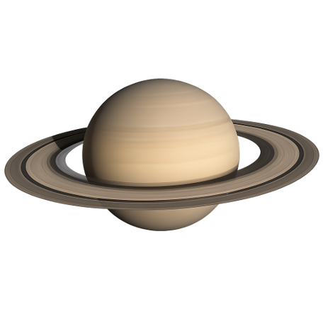
A Szaturnusz a Naptól számított hatodik bolygó. A Jupiter után a Naprendszer második legnagyobb bolygója. Szintén gázóriás, amelynek fő alkotóelemei a hidrogén és a hélium. A Szaturnusz legismertebb tulajdonsága a hatalmas és látványos gyűrűrendszere. A gyűrűk jégből, kőzetből és kisebb törmelékből állnak. A Szaturnusz sűrűsége olyan kicsi, hogy elméletileg egy megfelelő méretű víztömegben lebeghetne.
A Szaturnusz gyorsan forog, ezért alakja kissé lapult. Légkörében erős szelek és viharok figyelhetők meg. Az északi pólus környezetében egy különleges, hatszög alakú légköri képződmény is található. A bolygó gyűrűrendszere számos különálló gyűrűből és résből áll. A gyűrűkben kisebb holdak is találhatók, amelyek gravitációjukkal befolyásolják a gyűrűanyag mozgását. A Szaturnusz körül a Naprendszer legváltozatosabb holdrendszere található.
Titan
A Titan a Szaturnusz legnagyobb holdja. A Naprendszer második legnagyobb holdja a Ganymedes után. Különlegessége, hogy sűrű, nitrogénben gazdag légköre van. Felszínén folyékony metánból és etánból álló tavak és tengerek is találhatók. A Titanon felhők, esők és folyószerű képződmények is kialakulhatnak, bár ezekben nem víz, hanem szénhidrogének vesznek részt. Ez teszi a Titant a Föld mellett az egyik legérdekesebb, folyadékok által alakított égitestté.
A Titan felszínét vastag légköre miatt nehéz közvetlenül megfigyelni. A légkörben összetett szerves molekulák is kialakulhatnak. A hold felszíne alatt folyékony vízből álló óceán is lehet. A kutatók ezért azt vizsgálják, hogy milyen kémiai folyamatok zajlanak a Titan légkörében és felszínén. A Titan nem hasonlít pontosan a Földhöz, mégis több érdekes folyamat közös bennük. A hold különösen fontos az élet kialakulásához szükséges kémiai folyamatok kutatásában.
A Titan vizsgálata során a kutatók nemcsak a jelenlegi állapotára kíváncsiak. Azt is szeretnék megérteni, hogyan alakult ki és változott az évmilliárdok alatt. A NASA Dragonfly küldetése a tervek szerint egy rotoros leszállóegységgel fogja vizsgálni a Titan különböző területeit. A küldetés célja többek között a szerves kémia és a hold felszíni környezetének tanulmányozása. A Titan ezért a jövőbeli Naprendszer-kutatások egyik kiemelt célpontja. A hold egyedülálló környezete miatt fontos szerepet játszhat annak megértésében, hogyan alakulhat ki az élethez szükséges kémia.
Enceladus
Az Enceladus a Szaturnusz egyik kisebb, de rendkívül érdekes holdja. Felszínét szinte teljes egészében világos vízjég borítja. A déli pólus közelében hatalmas repedések találhatók. Ezekből vízgőz és jégrészecskék törhetnek ki az űrbe. A megfigyelések alapján a hold felszíne alatt folyékony óceán található. Ez az óceán az élet lehetőségének kutatásában különösen fontos.
Az Enceladus egyik legérdekesebb tulajdonsága a gejzírszerű anyagkilövellés. Ezek a kilövellések anyagot juttatnak közvetlenül az űrbe a felszín alatti vízrendszerből. Ez azt jelenti, hogy egy űrszondának nem feltétlenül kell leszállnia a hold felszínére ahhoz, hogy az óceán anyagát tanulmányozza. A Cassini űrszonda több alkalommal áthaladt az ilyen anyagfelhőkön. A mérések vízre és különböző kémiai vegyületekre utaló jeleket mutattak. Az Enceladus ezért az egyik legfontosabb asztrobiológiai célpont a Naprendszerben.
Az élet jelenlétét az Enceladuson még nem sikerült bizonyítani. A folyékony víz, a kémiai anyagok és az energiaforrások azonban érdekes feltételeket teremthetnek. A kutatók különösen azt vizsgálják, hogy az óceán és a hold kőzetes belseje között milyen kémiai reakciók történhetnek. Ezek a reakciók energiaforrást biztosíthatnak egyszerű élőlények számára. Az Enceladus ezért jól példázza, hogy egy kis és fagyos hold belsejében is lehet aktív környezet. További küldetések egy napon közvetlenebbül is vizsgálhatják az óceán összetételét.
Rhea
A Rhea a Szaturnusz egyik nagyobb holdja. Felszínét főként vízjég és kőzetes anyag alkotja. Sok becsapódási kráter található rajta, ami arra utal, hogy felszíne ősi. A Rhea nagyon hideg környezetben kering a Szaturnusz körül. Légköre rendkívül ritka, és nem hasonlítható a Föld sűrű légköréhez. A hold felszíne világos színű a sok jég miatt.
A Rhea belső szerkezete kevésbé aktív, mint néhány más Szaturnusz-holdé. A kutatók szerint jégből és kőzetből álló belső rétegekkel rendelkezik. Egyes modellek szerint mélyebb régióiban folyékony víz is lehetett vagy lehet. A hold pontos belső felépítésének megismeréséhez további gravitációs és geológiai mérések szükségesek. A felszíni kráterek segítségével a kutatók a Naprendszer történetének időskáláit is vizsgálhatják. A Rhea így egyszerre érdekes geológiai és történeti szempontból.
A Rhea a Szaturnusz holdrendszerének fontos tagja. Mérete miatt sokkal nagyobb, mint a bolygó számos apró, szabálytalan holdja. Felszínének megfigyelése azt mutatja, hogy a jeges égitestek sem teljesen egyformák. A Rhea és más holdak összehasonlítása segít megérteni, hogyan hat a méret és a Szaturnusztól való távolság a geológiai fejlődésre. A hold történetében a becsapódásoknak is fontos szerepük volt. A Rhea ezért jó példája egy ősi, jeges holdnak.
Dione
A Dione szintén a Szaturnusz nagyobb holdjai közé tartozik. Felszínén világos jég és sötétebb területek egyaránt megtalálhatók. Több nagy becsapódási kráter is található rajta. A felszínén hosszú, fényes vonalak is megfigyelhetők. Ezek a vonalak egykori geológiai folyamatokhoz kapcsolódhatnak. A Dione ezért nem egyszerűen egy inaktív jéggömb.
A Dione belsejében kőzet és jég található. A kutatók szerint a hold mélyén folyékony víz is jelen lehet. A Szaturnusz gravitációs hatása és a hold belső hője szerepet játszhat a folyékony rétegek fenntartásában. A Dione tanulmányozása segít megérteni, hogy a közepes méretű jeges holdak mennyire lehetnek belül aktívak. A felszíni jelek alapján a múltban jelentős geológiai változások történhettek. A hold története ezért szorosan kapcsolódik a Szaturnusz rendszerének fejlődéséhez.
A Dione különösen érdekes összehasonlítási alap más Szaturnusz-holdakkal. Felszíne kevésbé aktív, mint az Enceladusé, de sok közös tulajdonságot mutat vele. Ez arra utal, hogy a Szaturnusz holdjai között jelentős belső változatosság létezik. A kutatók a Dione gravitációs terét és felszíni összetételét is vizsgálják. Ezek az adatok segíthetnek megállapítani, van-e folyékony víz a mélyben. A Dione így fontos része a Szaturnusz holdrendszerének.
Iapetus
Az Iapetus a Szaturnusz egyik különösen feltűnő holdja. Felszínének egyik oldala nagyon sötét, míg a másik sokkal világosabb. Ez a hatalmas színkülönbség az Iapetus egyik legismertebb jellemzője. A hold egyenlítője mentén egy hatalmas hegylánc is található. A felszínén számos kráter figyelhető meg. Az Iapetus ezért látványos és tudományosan is érdekes égitest.
Az Iapetus sötét területeit valószínűleg külső eredetű sötét anyag is befolyásolja. A Szaturnusz rendszerének más részeiről érkező anyag a hold felszínére kerülhetett. A sötét felszín több napfényt nyel el, ezért hőmérséklete is eltérhet a világos területekétől. Ez a különbség hosszú idő alatt tovább erősítheti a felszíni eltéréseket. Az Iapetus fejlődése ezért több különböző fizikai folyamat eredménye lehet. A hold felszínének pontos története még ma is kutatás tárgya.
Az Iapetus pályája is különleges a Szaturnusz nagyobb holdjai között. A bolygótól viszonylag nagy távolságban kering. Emiatt a Szaturnusz gyűrűrendszerének közvetlen hatása kisebb, mint a belső holdak esetében. A hold tanulmányozása segít megérteni, hogyan mozog az anyag a Szaturnusz rendszerének külső részein. Az Iapetus emellett jól példázza, milyen változatos lehet egyetlen bolygó holdrendszere. Felszínének kontrasztjai miatt a Naprendszer egyik legkönnyebben felismerhető holdja.
Uránusz
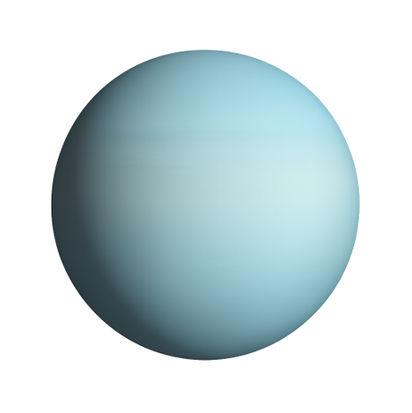
Az Uránusz a Naptól számított hetedik bolygó. A Jupiterhez és a Szaturnuszhoz hasonlóan nagy bolygó, de összetétele miatt jégóriásnak nevezzük. Légkörében hidrogén, hélium és metán található. A metán hozzájárul ahhoz, hogy a bolygó kékeszöld színűnek látszik. Az Uránusz különlegessége a rendkívüli tengelyferdesége. A bolygó gyakorlatilag az oldalán forog a Nap körüli pályájához képest.
Az Uránusz körül halvány gyűrűrendszer is található. A bolygón nagyon hideg körülmények uralkodnak. Légkörében erős szelek és változó felhők figyelhetők meg. Az Uránusz évszakai rendkívül hosszúak, mert egy teljes Nap körüli keringése körülbelül 84 földi évig tart. A nagy tengelyferdeség miatt a pólusok környezetében akár évtizedeken át tartó nappal vagy éjszaka is kialakulhat. Az Uránusz ezért a Naprendszer egyik legszokatlanabb bolygója.
Titania
A Titania az Uránusz legnagyobb holdja. Felszínén jég és kőzet található. Nagy völgyek és becsapódási kráterek is megfigyelhetők rajta. A hold felszínén olyan geológiai nyomok láthatók, amelyek arra utalnak, hogy a múltban belső folyamatok is működtek. A Titania az Uránusz holdrendszerének egyik legfontosabb tagja. Mérete ellenére jóval kisebb a Jupiter vagy a Szaturnusz nagy holdjainál.
A Titania belseje valószínűleg differenciált, vagyis különböző összetételű rétegekre tagolódik. Kőzetes magja és jégben gazdag köpenye lehet. Egyes modellek szerint mélyen a felszín alatt folyékony víz is előfordulhatott. Az ilyen lehetőség különösen érdekes a jeges holdak kutatásában. A hold felszínének repedései korábbi belső aktivitásról árulkodhatnak. A Titania története ezért nem csupán becsapódásokból áll.
Az Uránusz holdjainak kutatása jelenleg kevésbé részletes, mint a Jupiter vagy a Szaturnusz holdjaié. Ennek oka többek között a nagy távolság. Az Uránusz rendszerét eddig elsősorban a Voyager 2 űrszonda tanulmányozta közelről. A jövőbeli küldetések sokkal részletesebb képet adhatnának a Titania felszínéről és belsejéről. A Titania ezért fontos célpontja lehet egy jövőbeli Uránusz-missziónak. Kutatása segíthet megérteni a jégóriások holdjainak fejlődését.
Oberon
Az Oberon az Uránusz legkülső nagyobb holdjai közé tartozik. Felszínét sok becsapódási kráter borítja. A hold sötét színű, és jelentős mennyiségű jégből áll. Nagy kanyonok és geológiai képződmények is találhatók rajta. A felszíni kráterek egy része nagyon ősi lehet. Az Oberon így fontos információkat őrizhet az Uránusz rendszerének korai történetéről.
Az Oberon belsejében valószínűleg kőzet és jég keveredik. A hold mélyén egykori vagy jelenlegi folyékony víz lehetősége is felmerült. Ennek bizonyításához azonban további megfigyelésekre lenne szükség. A felszíni repedések és kanyonok belső feszültségekre utalhatnak. Ezeket a feszültségeket a hold lehűlése, összehúzódása vagy más belső folyamatok okozhatták. Az Oberon tehát sokkal összetettebb világ lehet, mint első pillantásra gondolnánk.
Az Oberon távoli pályán kering az Uránusz körül. Emiatt felszínét viszonylag kevés közvetlen megfigyelés alapján ismerjük. Egy jövőbeli űrszonda részletes képeket készíthetne a holdról. A kutatók így megvizsgálhatnák a kráterek korát és a felszíni anyag összetételét. Az Oberon vizsgálata hozzájárulna az Uránusz egész rendszerének megértéséhez. A hold ezért fontos célpontja lehet a következő generációs küldetéseknek.
Ariel
Az Ariel az Uránusz egyik nagyobb holdja. Felszíne a Naprendszer jeges holdjai között viszonylag fényes. Számos völgy és hosszú, összefüggő felszíni képződmény található rajta. Ezek arra utalhatnak, hogy a múltban jelentős geológiai aktivitás zajlott. A felszínén becsapódási kráterek is megtalálhatók. Az Ariel a nagyobb uránuszi holdak között különösen érdekes a geológiai változatossága miatt.
Az Ariel belsejében jég és kőzet található. A múltban a hold belső hője elegendő lehetett bizonyos geológiai folyamatok fenntartásához. A felszíni völgyek egy része belső feszültségek és repedések következtében alakulhatott ki. A kutatók azt is vizsgálják, hogy a mélyben lehetett-e folyékony víz. A jeges holdak belső óceánjai az utóbbi évtizedekben a bolygókutatás egyik fontos témájává váltak. Az Ariel ebben a kutatási területben is érdekes lehet.
Az Arielről jelenleg jóval kevesebb adat áll rendelkezésre, mint a Jupiter nagy holdjairól. Ez elsősorban az Uránusz nagy távolságának és a kevés közeli küldetésnek köszönhető. Egy új Uránusz-szonda részletesen feltérképezhetné az Ariel felszínét. A műszerek segítségével megvizsgálhatnák a jég és a kőzet összetételét is. Ezek az adatok segítenék annak megértését, hogyan alakultak ki az Uránusz holdjai. Az Ariel ezért a jövő bolygókutatásának fontos célpontja lehet.
Miranda
A Miranda az Uránusz egyik legkülönlegesebb holdja. Mérete viszonylag kicsi, felszíne azonban rendkívül változatos. Hatalmas sziklafalak, völgyek, kráterek és különleges világos-sötét területek láthatók rajta. A felszín egyes részei úgy néznek ki, mintha különböző darabokból állnának össze. A kutatók szerint a hold múltjában erős geológiai aktivitás zajlott. Miranda ezért az Uránusz egyik legérdekesebb holdja.
A Miranda felszínének változatosságát többféle folyamat okozhatta. Egyes területeken a belső hő hatására jégmozgások történhettek. Más képződmények becsapódások vagy tektonikus mozgások eredményei lehetnek. A hold belsejében korábban akár részben folyékony állapotú rétegek is lehettek. Ezek az aktivitások idővel átalakíthatták a felszínt. Miranda így egy kis méretű, de geológiailag összetett világ.
A Miranda közvetlen megfigyelésére eddig nagyon kevés lehetőség adódott. A Voyager 2 1986-os elrepülése során készített képek azonban sok kérdést vetettek fel. A képek alapján a hold felszíne sokkal összetettebb, mint amire mérete alapján számítani lehetett. Egy jövőbeli Uránusz-misszió részletesen megvizsgálhatná a Miranda különleges képződményeit. Ez segíthetne megérteni, hogyan képes egy kis jeges hold ilyen változatos felszínt létrehozni. Miranda ezért a Naprendszer egyik legérdekesebb kutatási célpontja.
Umbriel
Az Umbriel az Uránusz egyik nagyobb holdja. Felszíne sötétebb, mint több más uránuszi holdé. Sok becsapódási kráter található rajta, ami arra utal, hogy felszíne igen ősi. Az Umbriel jégből és kőzetből álló égitest. Felszínén néhány érdekes, világosabb képződmény is megfigyelhető. Ezek eredete nem minden esetben teljesen tisztázott.
Az Umbriel belsejében a jég és a kőzet keveredik. A hold múltjában belső hőforrások is működhettek. Ezek a folyamatok azonban valószínűleg kevésbé voltak erősek, mint Miranda esetében. A felszín megőrizhette a Naprendszer korai időszakának számos becsapódási nyomát. A kráterek vizsgálata ezért fontos lehet a hold életkorának meghatározásában. Az Umbriel jó példája annak, milyen változatosak lehetnek a jeges holdak.
Az Umbrielről rendelkezésre álló információk jelentős része a Voyager 2 megfigyeléseiből származik. Az űrszonda azonban csak rövid ideig tanulmányozta a rendszert. A jövőben egy pályára álló szonda sokkal részletesebb adatokat gyűjthetne. Megvizsgálhatná az Umbriel felszínének kémiai összetételét és belső szerkezetét. Ez segíthetne megállapítani, hogy a hold mennyire volt geológiailag aktív. Az Umbriel ezért további kutatásra érdemes égitest.
Neptunusz
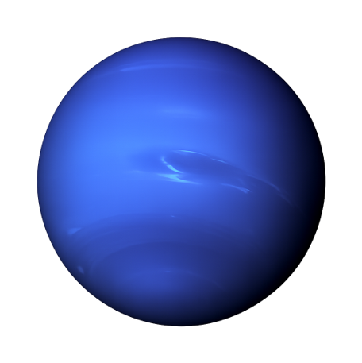
A Neptunusz a Naptól számított nyolcadik és legtávolabbi bolygó. Egyben a Naprendszer egyik jégóriása. Kék színét részben a légkörében található metán okozza. A Neptunusz légkörében rendkívül gyors szelek fújnak. Hatalmas viharok is kialakulhatnak benne. A bolygó nagyon messze van a Naptól, ezért a felső légkörében rendkívül hideg körülmények uralkodnak.
A Neptunusz körül halvány gyűrűk is találhatók. A bolygó egy teljes Nap körüli keringését körülbelül 165 földi év alatt végzi el. Egy neptunuszi év ezért hosszabb, mint az emberi történelem jelentős része. A bolygó légkörében a szelek sebessége elérheti a több ezer kilométeres óránkénti értéket. A Neptunusz belsejében a nagy nyomás és hőmérséklet miatt a víz, az ammónia és más anyagok különleges állapotokban lehetnek jelen. A bolygó belső szerkezete ezért jelentősen eltér a Földétől.
Triton
A Triton a Neptunusz legnagyobb holdja. Különlegessége, hogy retrográd, vagyis a Neptunusz forgásával ellentétes irányban kering. Ez arra utalhat, hogy a Triton eredetileg a Kuiper-öv egyik objektuma volt, amelyet a Neptunusz később befogott. A Triton felszíne nagyon hideg és jégben gazdag. Felszínén nitrogénjég és más fagyott anyagok is találhatók. A Triton a Neptunusz rendszerének legfontosabb és legérdekesebb holdja.
A Triton felszínén aktív folyamatokra utaló jeleket is találtak. A Voyager 2 megfigyelései során nitrogénből álló, gejzírszerű kilövelléseket figyeltek meg. Ez különösen érdekes, mert a hold nagyon hideg. A felszíni jelek arra utalnak, hogy a Nap gyenge sugárzása és a Triton belső folyamatai együtt is képesek változásokat létrehozni. A hold felszínén nagy síkságok és különleges mintázatok is találhatók. Triton ezért sokkal aktívabb világ lehet, mint amire a távolsága alapján számítanánk.
A Triton jövőbeli kutatása fontos lehet a Kuiper-öv objektumainak megértésében is. Ha valóban befogott törpebolygó-szerű égitest, akkor sok információt őrizhet a Naprendszer külső régiójáról. A felszíne és belső szerkezete összehasonlítható más jeges égitestekével. A kutatók különösen azt szeretnék megérteni, hogy a Triton belsejében lehet-e folyékony víz. Egy új Neptunusz-misszió jelentősen bővíthetné a róla rendelkezésre álló ismereteket. Triton ezért a Naprendszer egyik legérdekesebb jövőbeli kutatási célpontja.
A Naprendszer holdjainak összefoglalása
A Naprendszer holdjai rendkívül változatosak. Vannak közöttük apró, szabálytalan alakú égitestek és bolygó méretű, összetett világok is. A Jupiter Ganymedese például nagyobb a Merkúrnál, míg a Mars Phobosa és Deimosa nagyon kicsi. Egyes holdak teljesen fagyott és geológiailag kevéssé aktív felszínnel rendelkeznek. Másokon vulkánok, gejzírek vagy felszín alatti óceánok is lehetnek. A holdak ezért ugyanolyan fontos kutatási célpontok, mint maguk a bolygók.
Különösen érdekesek azok a holdak, amelyek felszíne alatt folyékony víz lehet. Ilyen lehet például a Jupiter Europa és Ganymedese, valamint a Szaturnusz Enceladusa és Titanja. A folyékony víz önmagában nem jelenti azt, hogy élet is létezik ezeken az égitesteken. A tudósok azonban azt vizsgálják, hogy a víz mellett energiaforrások és megfelelő kémiai anyagok is rendelkezésre állhatnak-e. Ezért a holdkutatás szorosan kapcsolódik az élet kereséséhez. A jövőbeli űrmissziók egyre részletesebben vizsgálhatják ezeket a különleges világokat.
A Naprendszer holdjainak kutatása egyben saját bolygónk történetének megértésében is segít. A Hold például fontos információkat őriz a Föld korai történetéről. A Jupiter és a Szaturnusz holdjai megmutatják, hogy milyen sokféle világ alakulhat ki egy óriásbolygó környezetében. Az Uránusz és a Neptunusz holdjai pedig a Naprendszer külső régióinak történetét segíthetik feltárni. A kutatások során egyre világosabbá válik, hogy a Naprendszer sokkal változatosabb, mint pusztán a nyolc bolygó együttese. A bolygók, holdak, kisbolygók, üstökösök és egyéb égitestek együtt alkotják azt a lenyűgöző rendszert, amelynek mi is részei vagyunk.
Összegzés
A Naprendszer központjában a Nap áll, amely energiát biztosít a körülötte keringő égitestek számára. Nyolc bolygó található benne, amelyek tulajdonságaik alapján kőzetbolygókra és óriásbolygókra oszthatók. A Merkúr, a Vénusz, a Föld és a Mars szilárd felszínű kőzetbolygók. A Jupiter és a Szaturnusz gázóriások, míg az Uránusz és a Neptunusz jégóriások. A bolygók körül több száz természetes hold kering, amelyek között rendkívül változatos égitesteket találunk.
A Naprendszer tanulmányozása azért fontos, mert segítségével saját bolygónk eredetét és fejlődését is jobban megérthetjük. Az olyan világok, mint az Europa, az Enceladus és a Titan, az élet kialakulásának lehetőségeiről is fontos információkat szolgáltathatnak. A Mars kutatása azt vizsgálja, hogy a múltban alkalmas lehetett-e az élet számára. A Nap megfigyelése pedig a Földet érő űridőjárási hatások megértésében segít. Az emberiség egyre fejlettebb űrszondákat küld a Naprendszer különböző részeibe. Minden új küldetés újabb részleteket tár fel arról a hatalmas kozmikus környezetről, amelyben a Föld található.
A Naprendszer azonban nem a világegyetem határa. A Nap egy átlagos csillag a Tejútrendszer sok milliárd csillaga között. A csillagászok más csillagok körül is több ezer bolygót fedeztek fel. Ezeket exobolygóknak nevezzük. A Naprendszer részletes tanulmányozása ezért abban is segít, hogy más bolygórendszereket jobban megértsünk. Minél többet tudunk a saját kozmikus környezetünkről, annál jobban megérthetjük azt is, milyen helyet foglal el a Föld a világegyetemben.
Forrásjegyzék
NASA Science – Solar System Exploration: The Planets.
https://science.nasa.gov/solar-system/planets/
NASA Science – Solar System Facts.
https://science.nasa.gov/solar-system/solar-system-facts/
NASA Science – Sun Facts.
https://science.nasa.gov/sun/facts/
NASA Science – Moons: Facts.
https://science.nasa.gov/solar-system/moons/facts/
NASA Science – Earth's Moon.
https://science.nasa.gov/moon/
NASA Science – Mars.
https://science.nasa.gov/mars/
NASA Science – Jupiter.
https://science.nasa.gov/jupiter/
NASA Science – Saturn.
https://science.nasa.gov/saturn/
NASA Science – Uranus.
https://science.nasa.gov/uranus/
NASA Science – Neptune.
https://science.nasa.gov/neptune/
NASA Jet Propulsion Laboratory – Solar System Exploration.
https://solarsystem.nasa.gov/
European Space Agency (ESA) – Space Science.
https://www.esa.int/ScienceExploration/SpaceScience
A források megtekintésének dátuma: 2026. október 8.
FIGYELEM! A teljes dokumentum MI felhasználásával készült.